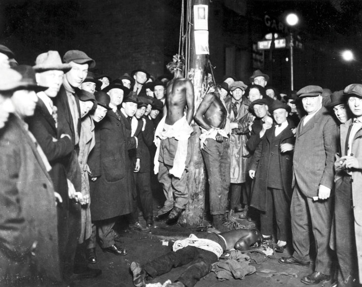
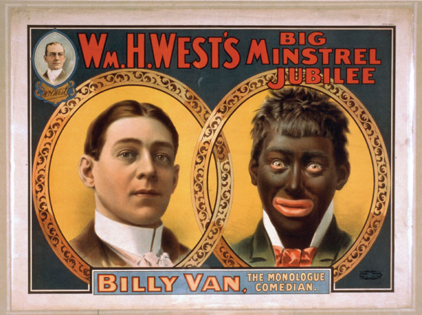

Ellis Island was opened in 1892. This small island within the New York harbor became the port of entry for about half of the immigrants to the United States in the next two decades. Those who were able to purchase regular tickets were entitled to proper sleeping quarters and were met on board by processing agents. These US immigration officials asked a few questions before permitting these immigrants to disembark. Those who could not afford a regular ticket were restricted to the steerage section of the boat and slept among the cargo.
These individuals faced closer scrutiny by immigration agents. Unlike their more affluent shipmates, these immigrants were directed through various checkpoints and holding areas constructed throughout Ellis Island. Among these checkpoints were rapid medical examinations aimed at preventing the introduction of contagious diseases to the country. The worst of these tests was for an eye disease known as trachoma; it required having one’s eyelids inverted. After the medical exam, inspectors asked each immigrant a list of questions. If an immigrant’s name was too difficult for the inspector to spell, it might simply be changed. The final question was the trickiest and the most dangerous. The immigrants were asked if they had a job waiting for them in the United States. Contract-labor laws prohibited recruiters from “importing” laborers. The law was intended to protect domestic workers from companies who might recruit laborers abroad in an effort to replace their present workforce. As a result, those who answered “yes” might find their last dollar paying for a return journey within the steerage of a cargo ship. For the rest, a ferry transported them to New York City where they hoped to reunite with family members and quickly find a “situation”—the term used at this time to indicate employment.
Most white immigrants who arrived in America before 1880 were from Western Europe. The British, French, Dutch, German, and Scandinavian immigrants are often called old-stock Americans for this reason. This moniker also applies to Protestants from Northern Ireland, and the descendants of all these old-stock immigrants. NativistsNativists hoped to prevent migration of nonwhites, non-Protestants, Jews, and other “new” immigrants from Central and Southern Europe. Ironically, they also shared prejudices against Native Americans who were not part of their vision for a white, Anglo-Saxon, and Protestant America. were individuals who hoped to restrict the migration of non-Protestant immigrants who were not part of this old stock. Nativists retained prejudices against the majority of Irish who practiced Catholicism. Some even viewed Catholic immigration from Ireland as a regrettable consequence of Britain’s failure to vanquish the island. Oral histories of Irish Catholic immigrants recall signs stating “No Irish Need Apply” in employment offices. Historians have not been able to find any clear evidence of such signs. A complete search of the New York Times between the Civil War and 1920 has only found a few anti-Irish provisos in the tens of thousands of help-wanted advertisements. The apparent rarity of actual signs or legally sanctioned discrimination did not make the persecution the Irish faced any less real. In addition, prejudices against people of German origin also remained strong in most areas of the country.
The Wisconsin state legislature passed the Bennett Law in 1889. Among its provisions was a ban on the German language in both public and private schools throughout the state. The old-stock Americans of Wisconsin resented the rapid growth of the German population and especially their cultural traditions related to alcohol. They believed that the public schools could be used to assimilate German children and spread Protestant values and culture, if not Protestant religion directly. Others viewed German schools with suspicion, believing that they were furthering the degradation of American culture and leading the state toward the bilingualism of nearby Canada. German Americans denounced the Bennett Law as a restriction of their freedoms and a Yankee assault on German culture by nativists who forced their values on others. Working with other ethnic Wisconsinites, recent immigrants rallied at the polls and voted for candidates who rescinded the Bennett Law 1891.
Figure 3.20

Prejudice against the Irish remained strong but was continuing to decline during the 1890s. This 1854 employment advertisement stating “No Irish Need Apply” is one of only of few of its kind that historians have found. Nevertheless, the impression remains that such signs were common. In reality, the kinds of discrimination most immigrants endured were usually more indirect.
Prejudice against Irish and German immigrants declined after the 1890s partially because a new group of “despised” immigrants took their place at the bottom of America’s ethnic hierarchy. After 1890, migration from Western Europe slowed considerably and immigrants from Southern and Eastern Europe began arriving in large numbers for the first time. These Jewish, Greek, Italian, Russian, Polish, Slavic, and other immigrants were despised by many throughout Western Europe, and these prejudices were carried across the Atlantic. Old-stock Americans, regardless of whether they were recent immigrants themselves, gave these “new” immigrants something less than a warm welcome to “their” country.
Nativists who opposed “nonwhite” immigration from central and southern Europe, along with other nations beyond Western Europe, formed the American Protective Association in 1887. This group launched hateful campaigns against the Jewish and Catholic migrants who were arriving in larger numbers. A second organization, the Immigration Restriction League, wanted a mandatory literacy test as a requirement for entering the country. In contrast to the English-based literacy tests that future generations of nativists would support, the Immigration Restriction League proposed written exams that were based on an immigrant’s native language. Most of the 20 million European immigrants who arrived in the next two decades had been denied the opportunity to attend school and could not read or write in any language. Although Congress approved a law requiring new arrivals to be able to pass a very basic test in the language of their choice, the law was vetoed by President Grover Cleveland. The president phrased his opposition in the language of egalitarianism and presented America as a land of opportunity and refuge for all who were willing to work. However, he was also under heavy pressure to veto the law by business interests who saw the new immigrants as a valuable source of cheap labor.
The federal government did not pass mandatory literacy tests for prospective immigrants, but nine Western and Northern states enacted English-based literacy tests for prospective voters. These exams were intended to prevent non-English speaking immigrants from voting. Perhaps recognizing the possible incongruity of their actions, few whites from these states protested as the South passed additional laws aimed at preventing African Americans from voting. As described in a previous section, the fusion of white and black voters in North Carolina and other Southern states had threatened the interests of the Democratic Party and many of the Bourbon elite they represented. Similar measures were adopted by other Southern states much earlier than North Carolina. For example, Florida’s 1885 poll tax placed a heavy financial burden on sharecroppers and laborers of all races who desired to participate in elections.
Beginning with Mississippi in 1890, Southern states held special conventions and rewrote their state constitutions to add provisions such as poll taxes. These conventions also added subjective measures designed specifically to keep black voters from the polls. For example, the Mississippi convention added an “understanding clause,” requiring voters to interpret a clause of the new constitution to the satisfaction of the registrar, who was presumably white. Despite continued violence and fraud, 130,000 African Americans in Louisiana were still able to cast votes in the 1896 elections. The fusion of white and black voters under the Populist banner threatened the Democratic Party’s control of Louisiana. The state legislature responded by adopting a new constitution that included literacy tests and the grandfather clause in 1898. By 1900, there were only 5,000 registered black voters in Louisiana.
Grandfather clauses and poll taxes kept poor voters of all races from the polls and thwarted movements such as Populism that sought to unite voters based on economic issues. Literacy tests reduced the number of eligible voters, but illiteracy was not the real issue in Louisiana and other Southern states. For example, there were only a few thousand registered black voters in Alabama in 1900, even though census records for that year recorded over 100,000 literate black men in state. The adoption of the white primary negated the effectiveness of minority votes in states that were dominated by a political party that explicitly sought to uphold white supremacy. As a result, few black voters were willing to submit themselves to literacy tests and pay poll taxes to participate in general elections that did not matter.
Between 1890 and 1908, every Southern state adopted poll taxes and other measures intended to restrict black suffrage. In many cases, the wealthy viewed the tendency of poll taxes to also reduce the number of poor white voters as a bonus. By emphasizing white supremacy, poor white voters had effectively disfranchised themselves by approving new state constitutions that enacted the poll tax. By 1920, Mississippi had only 60,000 voters participate in its general election. South Carolina recorded almost half this number. Northern states with similar populations recorded five to ten times the number of votes for the same number of presidential electors and representatives in Congress. As a result, wealthy white Southerners found that their votes carried more weight than Northerners (even when compared to the antebellum days when slaves were counted as three-fifths of a person in determining population and congressional apportionment).
Northern states were not immune from prejudice. California voters adopted an amendment to their state constitution in 1894 that allowed registrars to challenge the literacy of any potential voter. In such cases, the voter would have to read a hundred words of the state constitution to the satisfaction of the registrar. Few doubted that the registrar would select individuals to challenge by considering race and ethnicity. Eight other Northern states adopted similar provisions during this era as a deliberate measure to take the vote away from Hispanic citizens and recent immigrants.
In many cities, voting districts were gerrymandered by white Protestants who concocted ways to put nearly every Catholic and minority resident into one district. In other areas, voting districts might be drawn to ensure majorities for a particular party in nearly every district. Gerrymandering could be subtle, but some voting districts contained significantly more residents than others as a means of diluting the electoral power of certain voters. GerrymanderingThe process of drawing electoral districts or other boundaries in such a way as to favor one group. For example, the potential importance of minority voters could be limited by creating voting districts that placed a small number of minority voters in a number of districts or simply placing them all in one district that still had a white majority. was common in the South but was especially endemic in Northern, Southwestern, and West Coast cities with large immigrant populations. From Mexican Americans in Los Angeles to the sizeable Catholic population of Maine, voting districts were usually drawn in ways that diluted the strength of minority communities.
“We had to do it!” exclaimed a white Democrat in explaining how his Georgia county with 1,500 registered voters somehow recorded 6,000 votes in 1894. “Those damned Populists would have ruined the country.” For many whites, the possibility of “negro domination” was far more than a political concern and justified lawlessness beyond voting fraud. For many, it even justified murder. Lynching—the killing of a person without trial, usually in retaliation for an alleged crime or other infraction—peaked with nearly two hundred lynchings annually between 1890 and 1910.
Lynchings of alleged thieves had occurred in the frontier in the past, but nearly every lynching after the turn of the century was racially motivated. About 10 percent of these racially motivated lynchings occurred outside of the South, meaning that the percentage of black victims in comparison to the total black population was similar throughout the country. Lynchings occurred in a number of “liberal” Northern and Western communities, even those such as Quindaro, a neighborhood of Kansas City, which was founded by abolitionists. Lynchings also occurred in rural areas of the West and cities with small black communities, such as Duluth, Minnesota. However, lynchings were usually rare in cities with a sizeable and well-organized black working class, such as Baltimore and Philadelphia. It is likely that this was related to the likelihood of retribution against the would-be perpetrators in these cities.
Figure 3.21
Perhaps the most disturbing aspect of this photo of a lynching is that it was used as a postcard, indicating community sanction of the killing that had taken place. This particular lynching of three men occurred in Duluth, Minnesota, a chilling reminder that lynching was not limited to the South.
About half of the lynchings during this time period were carried out against men who allegedly raped white women. Although there was occasionally strong circumstantial evidence to suspect the guilt, in many cases the charges were quite unbelievable. Black civil rights activists Ida WellsBorn into slavery during the Civil War and forced to abandon formal education in order to provide for her family, Wells eventually became a teacher, civil rights leader, newspaper editor, and international lecturer. She was arrested for refusing to give up her seat on a Southern railroad in 1883 but was most famous for her tireless but unsuccessful efforts on behalf of a federal antilynching law. documented the details of lynching cases, demonstrating that in many cases the victim had never even been accused of a crime beyond refusing to kowtow to white supremacy. She also argued that in many instances where interracial sex had actually occurred, it was consensual until the relationship was discovered. Wells argued that the potential community shame led some white women to accuse her lover of rape. In such instances, the outpouring of community support for the “victim” was overwhelming. White women demanded that white men take action to protect the spotless virtue of the alleged victim, many times a lower-class woman who had never been considered for the pedestal she was now placed on. Such women soon found their elevated position a lonely existence, especially when their former lover or any other unfortunate black man the howling mob came across was lynched.
For many angry lynch mobs, it was usually insufficient to simply kill their victim. Crowds of thousands of men, women, and children watched and participated in a symbolic orgy of community-sanctioned violence. An example from a Midwestern city demonstrates how quickly this violence could denigrate into a grisly ritual. Fred Alexander, a man who may have been mentally disabled and had lived his entire life in Leavenworth, Kansas, after being accused of rape was forced to eat his own genitals before his body was riddled with bullets, dragged through the streets, hung from a light pole, and then set on fire. A coroner’s jury declared that Alexander had been killed by “persons unknown,” although many whites had taken home pieces of his charred flesh for souvenirs. Many times, the body was paraded through the black community, a grizzly reminder that white supremacy must not be challenged. The only evidence against Alexander was that he had been seen by the victim who heard a man whistling just before the crime had taken place. As the local paper explained, everyone in the town knew Fred Alexander “had a habit of whistling.”
Ida Wells was born into slavery in 1862 and lost her parents at age sixteen due to yellow fever. She raised her five younger brothers and sisters by working as a teacher, supplementing her abbreviated formal education with a love of books and learning for its own sake. She stood up to segregation, refusing to give up her seat on a railroad in 1883 and then suing the Chesapeake and Ohio Railroad after she was dragged from the car by two men. Wells sued the rail company and won, although the Tennessee Supreme Court later reversed the decision. Years later, the state of Tennessee and the rest of the South passed laws specifically permitting, and in many cases, requiring segregation in public transportation and most other public areas of life. Wells continued her confrontation of the color line, becoming an editor and an owner of the black newspaper the Memphis Free Speech, while continuing her work as a mentor of local children and a leading intellectual.
Her new job permitted Wells the resources to research the hundreds of lynchings that occurred each year and to compile statistics. She asked whites to consider why interracial rape, which had been almost unknown in the past, had suddenly become the greatest danger to Southern white women. For Wells, and for most thinking people, lynchings were not really about alleged crimes, but were rather a communal fete of white supremacy. Wells demonstrated how victims were often individuals who refused to abide by the expected racial codes of the South. A black man or woman who attempted to vote or hold office, started a successful business, or simply refused to move out of the way of a white person on a narrow sidewalk could be the next victim.
Figure 3.22

Ida Wells was a leader of the antilynching movement. In 1892 she published a book entitled Southern Horror: Lynch Law in All Its Phases, which documented the frequency and consequences of lynching.
After a friend of Wells was lynched in 1892, Wells printed an editorial suggesting that interracial sex in the South was neither uncommon nor always rape. That she was correct mattered little. A mob destroyed her printing press and would have likely lynched Wells had she not been in Chicago at the time. She did not return to the South, but instead traveled worldwide and lectured about the problem of lynching. She also led the movement to make lynching a federal crime. Because local courts rarely convicted whites for lynching in the North and seldom even bothered arresting anyone for these murders in the South, Wells and other African Americans demanded that the federal courts intervene. For the next sixty years, all attempts to make lynching a federal crime were defeated by Southern Democrats in the Senate.
Federal law prohibited racial segregation between the passage of the Civil Rights Act in 1875 and its nullification by the Supreme Court in 1883. The law was seldom enforced in the North or the South. At best, the federal law prevented states from passing laws mandating segregation beyond schools—a kind of separation that was banned from the original draft of the 1875 law but removed before its passage. Almost every federal lawsuit against violators of the Civil Rights Act was either thrown out on technicalities, mired in a maze of delays, or lumped together in the group of cases that were dismissed when the Supreme Court ruled the law unconstitutional in 1883. By the late 1880s, Southern states passed a variety of segregation ordinances that were nicknamed Jim CrowA term referring to the practice of racial segregation. The term itself is a derivative of the stage name taken by a popular white actor who mocked African Americans during the antebellum period. As a result, the origins of the phrase are indicative of the intent of “Jim Crow” laws to convey and enforce white supremacy. laws. By the end of the decade, nearly every form of public activity, from riding a streetcar to attending a theater, was segregated by law. Alabama passed a law forbidding interracial checkers, New Orleans segregated its prostitutes, and Mississippi prohibited any book used by black students to be used in a white school.
The name “Jim Crow” came from the stage name of an antebellum white actor who blackened his face and danced, pretending to be a buffoonish slave who was happy and lucky to be “looked out for” by a caring master. This style of entertainment featuring whites who mocked black men and women was known as blackfaceA popular form of so-called entertainment consisting of white actors using soot or makeup to blacken their faces and act buffoonish in a manner that mocked African Americans and conveyed a message of unity and supremacy among white audience members.. A popular variety of blackface featured several white men with blackened faces who performed a comedic routine wherein they could not answer the simplest questions posed to them by a white interlocutor. White audiences enjoyed these shows immensely. Strangers felt a spirit of commonality and superiority with the rest of the white audience who laughed at the hapless “black” minstrel. Just as many enjoy the feeling of inclusion that arises from making someone else the butt of a joke, the minstrel show gave audiences a collective identity that was positive by its exclusion of “the other.” Yet behind the black makeup and the red lipstick of the grinning blackface minstrel was something more sinister. Blackface celebrated white racial supremacy in ways that justified segregation and miseducation. Why not bar inferior children from the public school, the minstrel seemed to ask. What was wrong with preventing foolish men from being voters, and why would one not want to separate second-class citizens from first-class accommodations? Blackface entertainment and Jim Crow went hand in hand, and both traveled well beyond the South.
Black women and men challenged each of these laws, braving Southern jails and lynch mobs long before the modern civil rights movement of the 1960s. For example, a group of prominent black leaders in New Orleans organized the Comité des Citoyens (Citizens’ Committee) in September 1891. The purpose of the organization was to challenge Louisiana’s 1890 law that required separate rail cars or compartments for white and black passengers. The law itself was written to sound innocuous, claiming only “to promote the comfort of passengers.” The committee raised more than a thousand dollars and attracted several liberal white attorneys who agreed to represent their case. Before the committee could challenge the law in the courts, someone had to be arrested for violating the law. The committee selected Homer Plessy for the unenviable task, hoping that his very light complexion would further their argument that people should not be separated or excluded because of perceptions about race. The committee also arranged a deal with a local railroad. This particular line opposed the segregation law because it added to their operating costs by requiring additional rail cars with separate compartments. The rail company agreed to have Plessy arrested, while the committee was waiting at the jail with bail money in hand.
Figure 3.23
A poster for a minstrel show featuring a white actor in blackface.
Homer Plessy’s lead attorney Albion Tourgée also led a national organization that communicated about civil rights issues via the mail. After more than four years of trials and appeals, the case was heard by the US Supreme Court. Tourgée argued that justice was “colorblind” while the Fourteenth Amendment guaranteed all citizens the same right to due process regardless of race. In an infamous decision, the Supreme Court ruled in Plessy v. Ferguson (1896) that a segregation law might be valid if it supported established traditions and customs. The court upheld the Louisiana law, arguing that it met this historical criteria and served a positive social good by promoting “comfort and the preservation of the public peace and good order.” The court disagreed that segregation implied discrimination or inferiority. “We consider the underlying fallacy of the plaintiff’s argument to consist in the assumption that the enforced separation of the two races stamps the colored race with a badge of inferiority,” the Supreme Court responded. “If this be so, it is not by reason of anything found in the act, but solely because the colored race chooses to put that construction upon it.” John Marshall Harlan was the only member of the Supreme Court who dissented.
The Plessy decision would stand until the Supreme Court specifically revoked it in the 1954 case Brown v. Board of Education, which outlawed segregation in public schools. In the meantime, the 1896 decision included a provision that would become the basis of hundreds of civil rights lawsuits during the next sixty years. In issuing its defense of legal segregation, the majority decision required separate facilities to also be equal. This requirement led to numerous demands for better equipment and facilities for black schools and other segregated facilities throughout the Jim Crow South.
Our constitution is color-blind, and neither knows nor tolerates classes among citizens. In respect of civil rights, all citizens are equal before the law…We boast of the freedom enjoyed by our people above all other peoples. But it is difficult to reconcile that boast with a state of law which, practically, puts the brand of servitude and degradation upon a large class of our fellow citizens—our equals before the law. The thin disguise of ‘equal’ accommodations for passengers in railroad coaches will not mislead anyone, nor atone for the wrong this day done.
—US Supreme Court Justice John Marshall Harlan dissenting in Plessy v. Ferguson, which upheld the constitutionality of Louisiana’s segregation law.
Lawsuits against segregation itself would continue after 1896 in many Northern and Western states. This was because many of these states passed their own civil rights laws before or almost immediately after the Supreme Court invalidated the Civil Rights Act in 1883. T. Thomas Fortune, one of the most outspoken black leaders of this era, founded a national civil rights organization called the National Afro-American League in 1887. Four years later, he successfully sued a New York barroom that drew the color line against him. Neither his case nor his victory was particularly unusual. Black plaintiffs sued at least half a dozen restaurants and hotels between 1892 and the turn of the century in the state of Iowa alone. One of these cases included the proprietor of the restaurant inside the statehouse, an instance of discrimination that shows that civil rights laws were only enforced because of the actions of African Americans. Most local civil rights cases were dismissed on lack of evidence, but numerous judgments were issued in favor of black plaintiffs. In most of these cases, however, the judgments were for trifling amounts of money that did not even cover court costs. Many plaintiffs faced threats, and those with white employers or landlords might lose their jobs and homes. The consequences of confronting the color line in less obvious ways were likewise dangerous, even in the North.
Figure 3.24

This mid-nineteenth century image of a black man being removed from a rail car in Philadelphia reveals a number of truths about segregation. First, the color line was not limited to the South even if actual laws requiring segregation were passed in Southern states in the 1890s. Second, African Americans protested both formal and informal segregation long before the modern civil rights movement of the 1960s.
Raised beyond the veil of slavery, a new generation of African Americans relished and preserved the stories of their ancestors who confronted the lash with dignity. At the same time, they recognized that they were the heirs of some lesser freedom beset by prejudice and segregation. They passed on the work songs and freedom songs of their slave ancestors, the stories of fathers and grandfathers who served in the Union army, and experiences of legions of women like Harriet Tubman who escaped from slavery in one form or another. For many, their proud history demonstrated a path to freedom through the creation of stronger communities that might serve as a cocoon against the ugliness of the outside world.
Many historians of the black experience have identified the 1890s as “the nadir of race relations.” They cite the passage of segregation laws and the second wave of attempts to disfranchise black voters as evidence of their claim. Jim Crow laws, they remind their readers, were not created until a generation after slavery’s abolition. Other historians point out that custom rather than law separated white and black following the end of slavery. Few former slaves attempted to dine in restaurants or attend theaters, and those who needed to ride a train usually went to great lengths to avoid whites. With a few notable exceptions, they argue, segregation was as thorough before the enactment of Jim Crow laws in the 1890s as it was in later years. By this perspective, the creation of segregation laws might be evidence that at least some black Southerners were becoming more wealthy and assertive.
These same historians see the turn of the century as a time of limited progress despite the enactment of segregation laws. They cite the growth in the number of black teachers, professionals, entrepreneurs, and black colleges. Legal segregation provided a facade of legitimacy to the constricted freedoms and prejudices of the past, yet it also strengthened the sense of commonality among African Americans who built their own institutions beyond its veil. As a result, the black experience during the 1890s resists sweeping characterizations, just as the people of the era resisted segregation. During the final years of the nineteenth century, most of these protests were more subtle than a civil rights lawsuit.
In 1895, Booker T. Washington gave a famous speech known as “The Atlanta Compromise,” which argued that segregation was less important than creating good schools for black children and good jobs for black men. Privately, Washington also worked to aid civil rights activism. Publicly, however, Washington appeared to accept segregation as a tactical compromise. This tactic permitted Washington to have access to a number of white lawmakers and white philanthropists. In exchange for accepting segregation, Washington challenged these whites to make sure that black schools were receiving better support, if not equal support as required by law. Whether Washington’s decision was for the best interest of the race would be debated by black leaders during the early decades of the twentieth century.